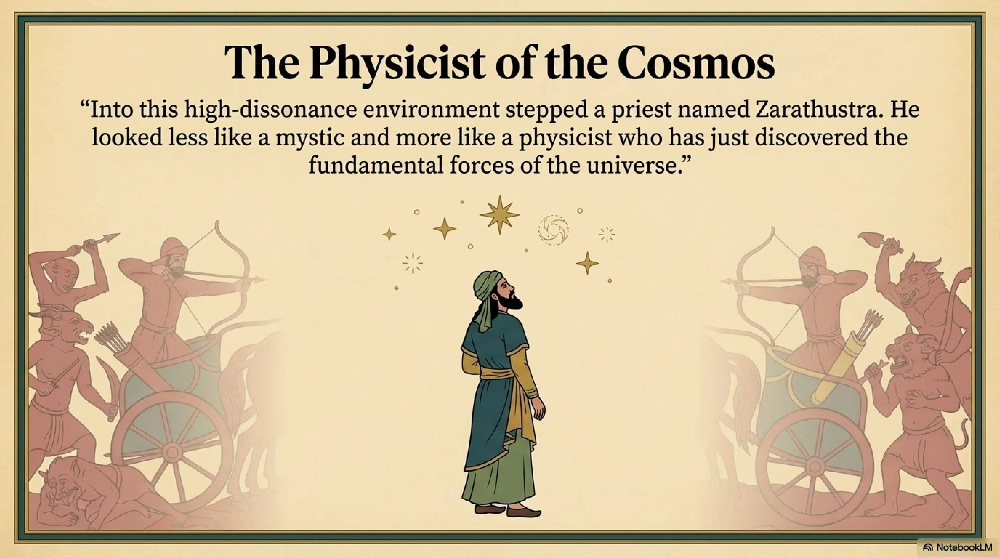
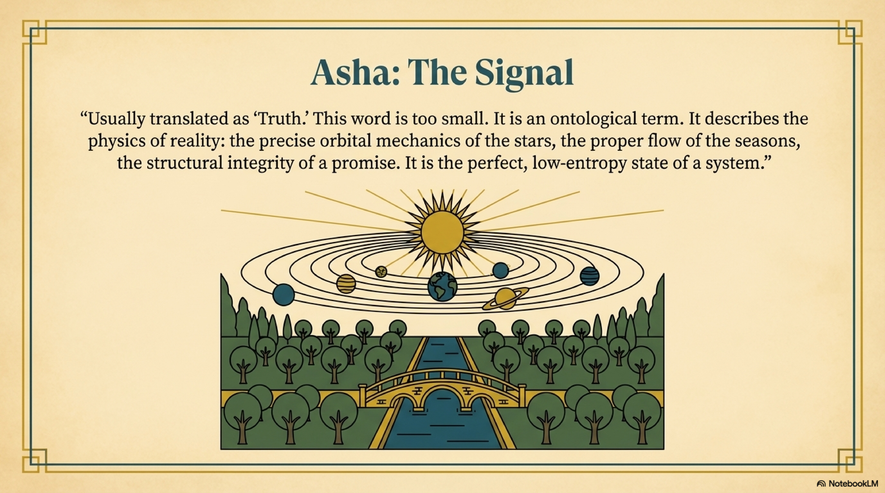
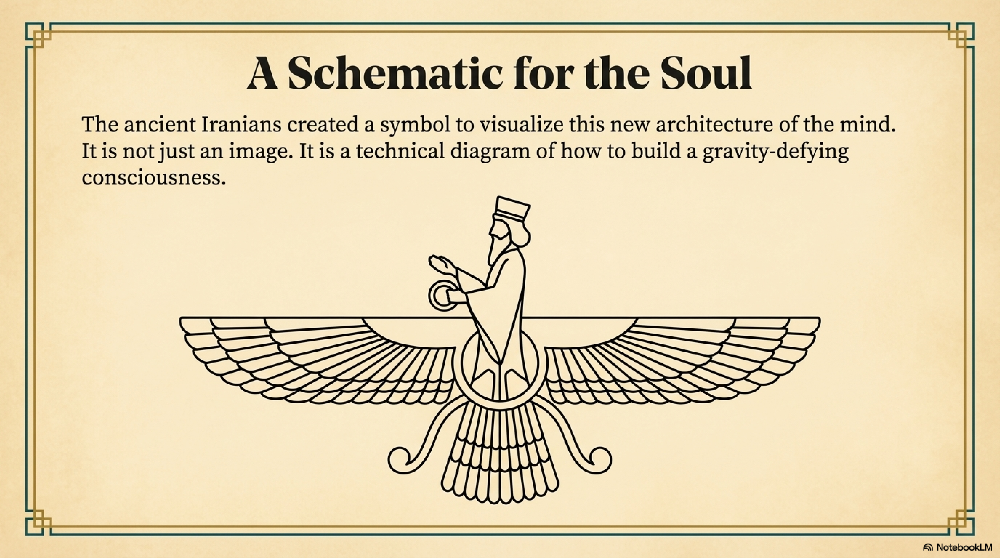

The Chaos of the Steppe
To understand the birth of the Persian Mind, we must first stand where it was born: on the Central Asian steppes, sometime around 1200 BCE.
It was a world of maximum entropy.
The ancestors of the Iranians were a pastoral people, living in a state of constant, low-level warfare. There were no cities, no walls, no written laws. It was the age of the chariot raider. Warlords and cattle thieves ruled through violence. The religious landscape was equally chaotic—a crowded, noisy marketplace of fickle nature gods (daevas) who demanded blood sacrifice and offered nothing but temporary favor.
There was no overarching structure. There was only power, and the terror of the strong.
Into this high-dissonance environment stepped a priest named Zarathustra.

He is often called the first theologian. But through the lens of our structural analysis, he looks less like a mystic and more like a physicist who has just discovered the fundamental forces of the universe.
He looked at the swirling, violent confusion of his world and realized that it was not a random mess. It was a battlefield between two absolute, structural principles.
He called them Asha and Druj.
Asha: The Signal
Asha is usually translated as "Truth" or "Righteousness." These words are too small. They are moral terms, but Asha was an ontological term. It described the physics of reality.
Asha is Coherence.
In the Avestan language, Asha (cognate with the Vedic Rita) meant "the way things ought to be." It referred to the precise orbital mechanics of the stars, the correct rising of the sun, the proper flow of the seasons, and the structural integrity of a promise.
Asha is the perfect, low-entropy state of a system. It is the Signal. When a wheel turns without friction, that is Asha. When a king rules without tyranny, that is Asha. When a sentence perfectly describes reality, that is Asha.
It is the domain of The Sky (Level 7) pressing its order down into The Roots (Level 1).
Druj: The Noise
Opposing it was Druj. We translate this as "The Lie." But again, we miss the physics.
Druj is Entropy.
Druj is not just telling a fib. Druj is distortion. It is the force that causes things to deviate from their true nature. Decay is Druj. Corruption is Druj. The chaotic violence of the cattle raiders was Druj.

Zarathustra’s insight—the "Spark" that ignited the Persian Mind—was that these two forces are not compatible. They are in a state of total, cosmic war. The universe is not a playground for whimsical gods; it is a binary system. Every atom, every thought, and every action belongs either to the force of Coherence or the force of Coherence or the force of Entropy.
There is no middle ground. You are either building the structure, or you are tearing it down.
The Mind of God
If the universe is a war between Order and Chaos, what is the source of Order?
Zarathustra stripped the heavens of the old, chaotic gods. He posited a single, supreme entity: Ahura Mazda.
The name is significant. Ahura means "Lord," implying Power. Mazda means "Wisdom," or "Mind."
This was a radical phase transition. The ultimate reality was not a Storm God of force or a Fertility God of biology. The ultimate reality was Wisdom. It was Mind.
This is the first establishment of The Sky in Persian history. Zarathustra argued that the universe originates from a single, coherent intent. Ahura Mazda is the Great Architect, the supreme generator of Asha.
This changed the nature of worship. You do not feed Ahura Mazda with blood, which is messy and entropic. You feed Him with Alignment.
The Anatomy of the Winged Soul
To visualize this new architecture of the mind, the ancient Iranians created a symbol that has outlasted their empires. Today, it is worn as jewelry, tattooed on skin, and carved into the ruins of Persepolis. It is the Faravahar.
Most see it as a religious icon, a representation of a guardian angel or the soul. But through the lens of FRC, it is not just an image. It is a Schematic. It is a technical diagram of how to build a gravity-defying consciousness.

Look closely at the wings.
They are not drawn with random feathers. In the classical Achaemenid relief, each wing is composed of three distinct rows of feathers. This is not an aesthetic choice; it is a structural one.
- 1. The Top Row: Represents Humata (Good Thoughts). This is the layer of The Map (Level 4). It is the leading edge of the wing, the part that cuts through the air.
- 2. The Middle Row: Represents Hukhta (Good Words). This is the layer of The Garden (Level 5). It provides the surface area, the transmission of the signal.
- 3. The Bottom Row: Represents Huvarshta (Good Deeds). This is the layer of The Roots (Level 1). It is the foundation that pushes against the resistance of the world.
The diagram teaches a lesson in aerodynamics: You cannot fly with a broken wing.
If your Thoughts are clear, but your Deeds are corrupt, the wing is unbalanced. You will not generate lift. You will spiral into entropy. The soul can only ascend—it can only achieve The Sky—when all three layers are intact and aligned.
Now, look at the figure in the center.
He holds a ring in his left hand. This is the Ring of Covenant. It represents the binding force of Mithra—the promise, the contract, the social bond. It tells us that coherence is not a solitary act. We are bound to each other.
And around his waist is a larger circle. This is the Loop of Return. It represents the cyclical nature of time and the immortality of the soul. It suggests that while the body (the lower half) may perish, the coherent structure (the upper half) is part of an eternal system.
The Faravahar is a blueprint. It tells the observer: Build your mind like this. Align your thoughts, words, and deeds. Honor your bonds. And you will not fall.
But the symbol contains one final, linguistic secret.
The word Faravahar shares its root with Fravashi (the pre-existent soul) and Farr (the divine glory).
In our structural analysis, these are not three separate concepts—they are three aspects of a single phenomenon.
- The Fravashi is your Template in the Resonant Field—your ideal, coherent form.
- The Farr is the Radiance—the high-energy discharge that flows when you align with that template.
- The Faravahar is the Schematic that shows you how to do it.
To wear the symbol is to carry a technical reminder: Tune yourself to the Field, and the Glory will follow.
It was the logo of the first Coherence Machine. And three thousand years later, the machine is still running.
The First Responsibility
This cosmology created a new kind of human agency. In the old world, humans were slaves to the gods. In Zarathustra’s world, humans were allies.
Ahura Mazda needs human beings. The war against Entropy is not guaranteed. The universe requires active maintenance. We are the coherence pumps designed to push back the Druj.
Zarathustra taught that the human mind, The Map, is the battlefield where the war is won or lost. Every choice increases the coherence or the entropy of the world.
The tribe on the steppe had found its operating system. They had discovered the laws of the universe. Now, they needed a protocol to execute them.
They needed a code of conduct that could turn this philosophy into a civilization.